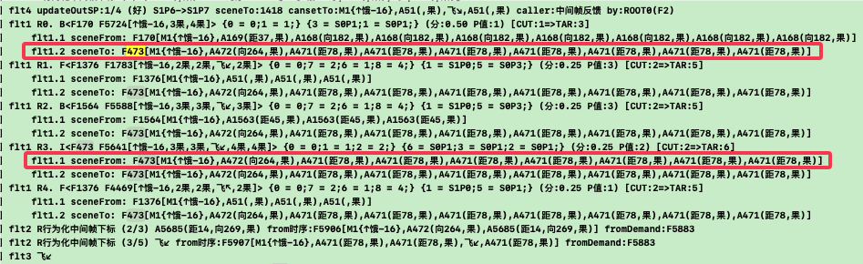
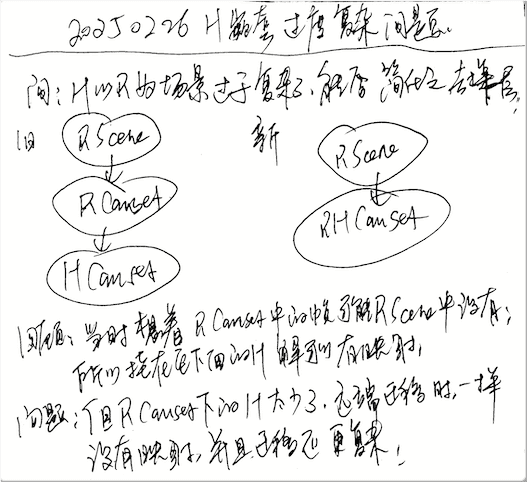
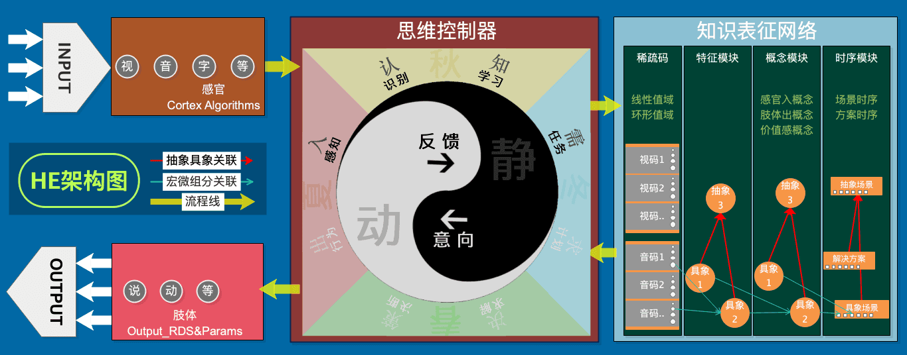

AI系列之《2024.11-2025.02：竞争浮现与 H 迁移修正》

来源：HELIX_THEORY/手稿/assets/724_记录有向无距果场景在竞争中慢慢浮现日志.png

来源：HELIX_THEORY/手稿/assets/728_H嵌套过度复杂问题.png

来源：HELIX_THEORY/手稿/assets/730_HE架构图V5.png
来源：Note33.md
11 月到次年 2 月，手稿围绕试错训练、二次过滤后多样性消失、无距有向场景竞争浮现、H 迁移沿 R 迁移关联进行、hSolutionV4，以及简化 H 嵌套展开。
“竞争浮现”成为这一阶段的关键词。系统不再追求人工指定唯一正确候选，而希望在充分竞争中让稳定结构浮现出来。但竞争也会带来副作用，例如二次过滤过强导致多样性消失。
H 迁移的修正和 hSolutionV4 的扩大求解范围，说明高层任务与方案迁移之间的关系仍在调整。简化 H 嵌套则是一次必要的架构降复杂度：当嵌套层过深，系统会变得难以训练和调试。